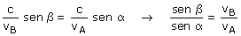

|
Cuando la luz pasa de un medio a otro donde su velocidad es distinta sufre un cambio en la dirección de propagación. La ley de Snell describe este cambio: nB·sen β = nA· sen α |
Esta relación puede expresarse en función de las velocidades de la luz en cada medio:

Esta expresión nos indica que cuanto mayor es la velocidad de propagación en el medio mayor es el seno del ángulo que forma el rayo con la normal. Dicho de otra forma: cuanto mayor es la velocidad de propagación más se separa el rayo de la normal
En nuestro caso la velocidad será mayor en el medio
A